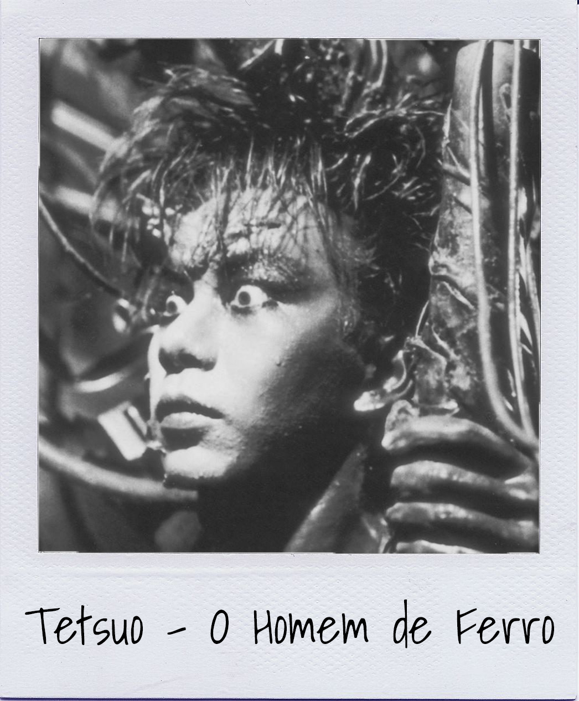
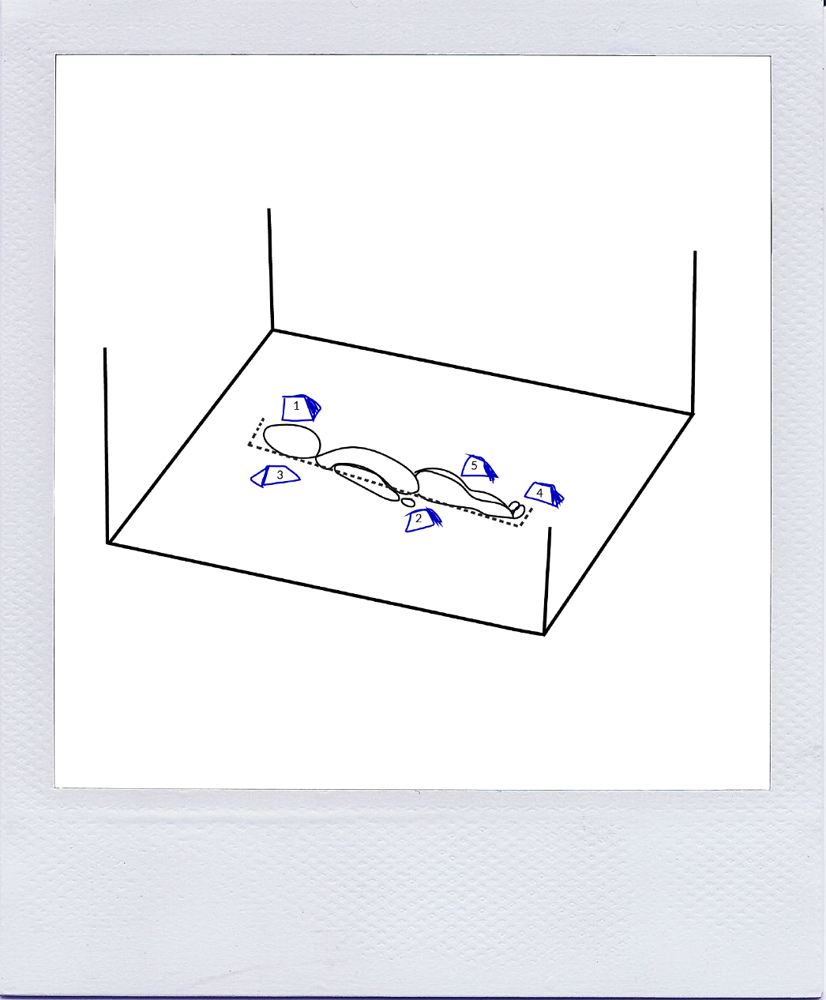

Conceito
O livro “A Ilustre Máquina de Ramires” de António Pocinho, apresenta-se sob o formato de 7 capítulos, preenchidos com legendas surrealistas de fotografias que não se encontram presentes fisicamente na obra. Tal deve-se ao facto de, alegadamente, António Pocinho encontrar uma máquina fotográfica na rua e começar a tirar fotografias com a mesma.
Não tendo qualquer conhecimento de fotografia, não reparou que a máquina estava avariada e quando foi revelar as fotografias estas estavam todas pretas. Este foi então o nosso ponto de partida, esta relação do autor com a máquina. Um objeto que do ponto de vista lógico e racional deve ser substituído por um novo mas que, lutando contra todas as probabilidades levou a uma obra artística e ao sucesso de um autor.
Pretendemos,com esta instalação explorar toda a esta componente de ciclo, de vida e morte, de ligação do mundo físico com o mundo digital e do quanto nos assemelhamos às máquinas que construímos. Para tal, dividimos a nossa instalação em 7 partes, 7 interações que representam por sua vez os 7 capítulos. Estas 7 interações fazem um ciclo perfeito de vida e morte.
1
Crimes Céleres
Local — Cérebro
Sendo que se trata do início do cíclo, com recurso a um sensor de proximidade e com a ajuda de um arduino, à medida que o espectador se aproxima da figura, é projetado na quatro paredes, um vídeo curto de contextualização, com alusões imagéticas ao ciclo e ao propósito da exposição.
2
Impressões Genitais
Local — Dedos da Mão Direita
Esta parte contextualiza a interpessoalidade da máquina, na qual o espetador toca nos dedos e deixa a sua impressão digital, com a ajuda de papel térmico.
3
Retratos de Um Delirium Album
Local — Umbigo
Através de um botão localizado no umbigo, o espetador ativa a máquina que reage acendendo um conjunto de leds, percorrendo uma sequência do umbigo até à cabeça e simultaneamente do umbigo até aos pés, apagando-se pela ordem contrária à que se acendem (de dentro para fora e de fora para dentro).
4
Story a Bordo de Um Crime
Local — Pés
Utilizamos os dois pés, sendo que o da esquerda contém um ponteiro analógico e o direito um ponteiro digital. O analógico terá a parecença de uma bússola/astrolábio, baseando-nos nas estrelas e no sentido de navegação que acompanha todo o capítulo, enquanto que o da direita vai ter ponteiros digitais que fazem lembrar um relógio. À medida que o espetador mexe o ponteiro analógico, o ponteiro digital acompanha esse movimento, dando então a sensação de que está a operar a máquina. No entanto, quando deixa de manusear o ponteiro do lado esquerdo, ele volta ao mesmo sítio, verificando que não fez qualquer diferença/efeito no mecanismo em si.
5
Fotos de Um Homem Morto
Local — Joelho Direito
A perna do nosso protótipo encontra-se quebrada a meio, sendo que na zona joelho, que separa as duas partes, se encontram fotografias instantâneas de diferentes texturas. É possível o espetador retirar e analisar as mesmas e até mesmo compará-las com as diferentes texturas do protótipo.
6
Álbum de Família de Afonso Colite
Local — Zona Genital
A zona genital do nosso protótipo encontra-se coberta de acrílico transparente, deixando à imaginação de cada um o que poderá conter. Com a ajuda do telemóvel e de uns pós mágicos de realidade aumentada, o espetador pode descobrir uma animação relativa ao capítulo correspondente.
7
Instantâneos
Local — Cérebro
O espetador chega então ao fim do ciclo. Utilizando um sensor de toque
é despoletada a mesma projeção mas desta vez no sentido inverso e mais rápida.
Depois desta curta interação, o coração do protótipo começa a “bater” e a máquina a ganhar vida,
durante alguns instantes, apagando-se de seguida.
Voltámos ao ínicio do ciclo.
Espaço
— Sala - tamanho mínimo de 5x5 metros
— Identificador Numérico - 20x30 centímetros
— Escultura/Objeto - aproximadamente 1,50 metros
Referências
— Jean Tinguely
Nouveau Réalisme, transforma materiais derivados do quotidiano humano e de desperdícios de consumo em obras de arte. Máquinas satíricas com funções diversas, absurdas e inúteis e por vezes auto-destrutivas.
— Niki de Saint Phalle
Nouveau Réalisme, em particular o trabalho Hon-En Katedral, uma escultura que representava o corpo da mulher do interior.
— Fritz Kahn
Fritz Kahn inspirou-nos na representação e explicação do corpo humano ao compará-lo com mecanismos. Inspirámo-nos especialmente em dois diagramas, um que representa o funcionamento do sistema digestivo, que serviu de base à nossa folha de sala e outro que representa as doenças que podem ser diagonosticadas de acordo com a irís do olho, que serviu de base ao nosso diagrama circular apresentado na Landng Page.
— Nam June Paik
Nam June Paik é considerado o criador da videoarte. Os seus trabalhos incluem diversas performances, quebras e delírios com equipamentos eletrónicos inspiraram-nos na representação da nossa escultura "humanóide". Estas obras abordavam assuntos como a impessoalidade do vídeo e a relação do utilizador com a máquina, sendo estes temas também muito presentes na nossa instalação.
— Tetsuo - O Homem de Ferro
Tetsuo é um filme cyberpunk de terror japonês, considerado um filme de culto, em que um homem faz uma metamorfose para um corpo de metal. O filme contém diversos aspetos estéticos interessantes e inspirou-nos no processo de construção da escultura.
— Álvaro de Campos
Álvaro de Campos é o heterónimo de Fernando Pessoa ligado ao Futurismo e às máquinas. A sua paixão pela engenharia e anatomia da máquina fez parte da inspiração para o nosso conceito.
— Stelarc
Stelarc é um artista de performance ligado ao Futurismo e à extensão do corpo humano. Os seus trabalhos inspiraram-nos a pensar nas possibilidades do corpo e da máquina e da ligação entre os mesmos.
— Marcel-Lí Roca
Marcel-Lí Roca é um artista que utilizada elementos mecânicos combinados com performance que exploram os limites do corpo humano e da máquina.
Ângulos — Perspetiva do Utilizador

euros
— Custo Total —
minutos
— Tempo Total —
Montagem

Créditos
— Guionista/Copy - Catarina Lucas Loureiro
— Direção de Arte - Ana Carina Correia
— Programador - Mário Abrantes
— Produtor Executivo - Ana Carina Correia & Catarina Lucas Loureiro